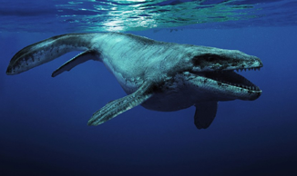

ANIMAIS TERRESTRES EXTINTOS
Dodô (Raphus cucullatus)
Emblemático dessas espécies extintas, foi dizimado em menos de um século. Isso aconteceu no final do
século XVI, devido à presença de marinheiros europeus que desembarcaram nas Ilhas Maurício onde a
espécie vivia com segurança. Foi caçado pelos homens e também por ratos e outros predadores (levados
pelos navios) até a extinção.
Tigre da Tasmânia ou Tilacina (Thylacinus cynocephalus
O lobo-da-tasmânia, conhecido em outras línguas como tigre-da-tasmânia, foi o maior marsupial carnívoro
dos tempos modernos. Nativo da Austrália e Nova Guiné, acredita-se que foi extinto no século XX.
Foi vítima dos seres humanos e de seus cães, os dingos, que se tornaram
competidores do animal.
Grande Tigre Dente de Sabre (Smilodon)
Foi um predador excepcional que viveu na América do Sul e Central. Seus caninos podiam medir até 28 cm.
Seu desaparecimento está relacionado à colonização iniciada há 10 mil anos. Na exposição, ele surge a
poucos metros da cabeça do/a visitante, mostrando seus dentes através de um bocejo.
ANIMAIS MARINHOS EXTINTOS
Baiji (Golfinho branco)
Ex-habitante do rio Yang Tsé, na China, o Baiji ou Golfinho branco é o primeiro cetáceo a desaparecer da
natureza em tempos modernos, ao ser declarado extinto em 2007. A poluição, o ruído alto das hélices de
barcos, que os desorientavam, a falta de peixes para se alimentar, já que aproximadamente 400 milhões de
chineses vivem às margens do rio Yang Tsé, e métodos ilegais de caça, contribuíram para a extinção da
espécie.
Vaca Marinha de Steller (Hydrodamalis Gigas)
Hydrodamalis gigas, conhecido popularmente como dugongo-de-steller ou vaca-marinha-de-steller, é uma
espécie extinta de mamífero marinho da ordem Sirenia que se extinguiu no final do século XVIII. Animal
de 8 metros, que chegava a pesar 11 toneladas, vivia sob as águas do Pacífico. Sua população já
estava enfraquecida, quando os seres humanos a descobriram, em 1741. Foi caçado por seu óleo e carne até
desaparecer em 1768.
Arau-gigante (Pinguim-impennis)
Semelhante a um pinguim, a ave não voava, tinha quase um metro de altura e chegou a habitar as ilhas na
costa norte da Europa e do nordeste da América do Norte. O último Arau-gigante que se tem notícia foi
executado na Escócia por volta de 1840, por moradores de um vilarejo da região que acreditavam que o
animal era uma bruxa. Além disso, eles eram caçados como alimento e isca.
ANIMAIS DA ÉPOCA JURÁSSICA TERRESTRES
Tiranossauro Rex
Ele viveu há cerca de 68 milhões de anos onde hoje é o Canadá. Scotty, como foi batizado o animal, morreu
com 28 anos (idade avançada para um dino de sua espécie) e pesava cerca de 9 toneladas, mais do que o
elefante-da-savana, o maior animal terrestre vivo.
Tricerátops
Apesar de serem herbívoros, estes gigantes eram máquinas de matar quando preciso. Suas cabeças eram
adornadas com três chifres, dois maiores sobre os olhos e um menor sobre o focinho. Além do mais, uma
grande característica dos ceratopsídeos era a carapaça óssea envolvendo o pescoço, além de um bico
extremamente resistente.
Velociraptor
O Velociraptor mongoliensis foi um dinossauro do tamanho de um peru, que viveu nos desertos da Mongólia.
Esse pequeno caçador era provavelmente bastante ágil e inteligente e viveu entre 75 e 71 milhões de anos
atrás.
AMIMAIS JURÁSSICOS MARINHOS
Mixossauro
O mixossauro era um dos menores ictiossauros já encontrados. Ele nadava ao balançar sua cauda
lateralmente, talvez dando uns “piques” momentâneos para surpreender cardumes e obter uma refeição mais
fácilmente. O animal tinha um focinho comprido e dentes afiados. Os mosassauros foram os répteis
pré-históricos da família Mosassauridae que eram os principais predadores dos oceanos do final do
Cretáceo.
Rutiodonte
O rutiodonte foi um fitossauro que se parecia muito com um crocodilo moderno. Ele tinha os dentes
dianteiros alargados e um focinho bem estreito, como o de uma espécie atual chamada gavial. A exemplo
dele, o rutiodonte provavelmente caçava peixes e também podia apanhar pequenos animais terrestres na
beira da água. Suas costas, flancos e cauda eram cobertos por placas ósseas blindadas, novamente
lembrando muito seus parentes modernos.

Mosassauros (Mosasauridae)
Os mosassauros foram os répteis pré-históricos da família Mosassauridae que eram os principais predadores
dos oceanos do final do Cretáceo. Os mosassauros tinham um corpo fusiforme, dotado de dois pares de
nadadeiras laterais, perfeitamente adaptado a vida em mares pouco profundos. Eram carnívoros, sendo que
o menor exemplar conhecido media cerca de 3,5 metros de comprimento e o maior 17 metros, Mosasaurus
hoffmannii. Chegaram a pesar até 6 toneladas.
CURIOSIDADE
Dentre um dos maiores predadores e poderosos que já viveram na terra,
temos o Megalodon. Megalodon é uma espécie extinta de tubarão gigante que viveu entre 28 a 1,5 milhão de
anos atrás. Seu nome significa “dente grande”, e já podemos imaginar o porquê. Graças ao seu incrível
comprimento de até 18 metros. Antigamente se pensava ser um membro da família Lamnidae e um parente
próximo do tubarão-branco (Carcharodon carcharias). No entanto, atualmente é classificado na família
extinta Otodontidae, que divergiu da do tubarão-branco durante o Cretáceo Inferior.